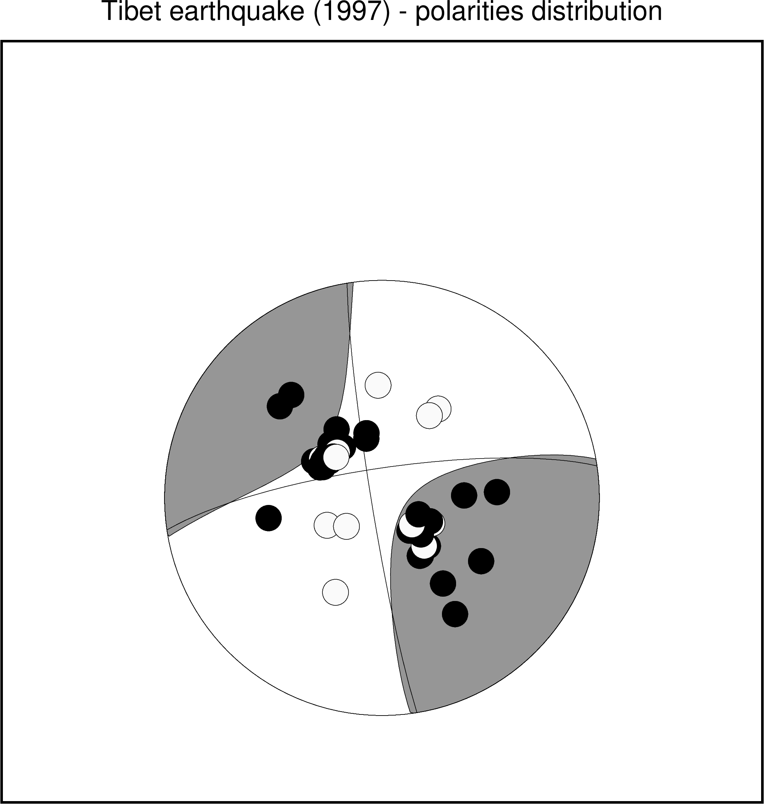

polar¶
| 官方文件: | polar |
|---|---|
| 簡介: | 將臺站的極性信息畫在震源球上 |
通常可以使用 meca 模塊繪製震源球，再使用 polar 模塊將每個臺站的震相極性信息畫在相應的震源球上。
語法¶
gmt polar [ table ] -Dlon/lat -Jparameters -Rregion -Msize[+mmag] -S<symbol><size> [ -Bparameters ] [ -Clon/lat[+ppen][+spointsize] ] [ -Efill ] [ -Ffill ] [ -Gfill ] [ -N ] [ -Qmode[args] ] [ -Tangle/form/justify/fontsize ] [ -U[stamp] ] [ -V[level] ] [ -Wpen ] [ -X[a|c|f|r][xshift[u]] ] [ -Y[a|c|f|r][xshift[u]] ] [ -dinodata ] [ -eregexp ] [ -hheaders ] [ -iflags ] [ -ttransp ] [ -:[i|o] ] [ --PAR=value ]
必須選項¶
- table
- 一个或多个ASCII或二进制表数据。若不提供表数据，则会从标准输入中读取。
輸入數據的格式爲:
station_code azimuth take-off_angle polarity
station_code 臺站名或其它任意字符串
azimuth 震相從源到臺站的方位角
take-off_angle 震相從源出發時的出射角
polarity 震相極性
- 壓縮部分（正極性）可以用 c, C, u, U, + 表示
- 拉伸部分（負極性）可以取 d, D, r, R, - 表示
- 未定義：其他字符
- -Jprojection (more …)
- 设置地图投影方式。
- -Rxmin/xmax/ymin/ymax[+r][+uunit] (more …)
- 指定数据范围
- -Dlongitude/latitude
- 震源球的位置，需要與 meca 模塊輸入數據中震源球的位置相同
可選選項¶
- -Clon/lat[+ppen][+spointsize]
- 將震源球放在新的位置上，並將新位置與老位置之間連線。
- -Ecolor
- 拉伸象限內臺站的符號填充色 [默認爲250]
- -F*fill
- 設置震源球的背景色 [默認不填充]
- -Gcolor
- 壓縮象限內臺站的符號填充色 [默認爲黑色]
- -N
- 不跳過地圖邊界外的符號
- -Qmode[args]
- 設置多個屬性，該選項可重複使用。
- -Qe*[pen]
- 拉伸象限內符號的輪廓屬性
- -Qf[pen]
- 震源球的輪廓屬性
- -Qg[pen]
- 壓縮象限內符號的輪廓屬性
- -Qh
- 使用HYPO71輸出的特殊格式
- -Qshalf-size[+vv_size[vecspecs]]
繪製S波偏振方位角。S波偏振信息位於最後一列。
+v 用於設置箭頭。v_size 爲箭頭大小，後可接其它箭頭相關屬性。
- -Qtpen
- station_code 的字體顏色
- -Tangle/form/justify/fontsize
- 將 station_code 寫到圖上，其餘參數字符串的角度、形式、對齊方式和字體大小。
- -U[label][+c][+jjust][+odx/dy] (more …)
- 在图上绘制GMT时间戳logo
- -V[level] (more …)
- 设置 verbose 等级 [c]
- -Wpen
- 設置畫筆屬性
-X[a|c|f|r][xshift[u]]
- -Y[a|c|f|r][yshift[u]] (more …)
- 移动绘图原点
- -dinodata (more …)
- 将输入数据中值为 nodata 的列替换为 NaN
- -e[~]”pattern” | -e[~]/regexp/[i] (more …)
- 只接受匹配指定模式的数据记录
- -icols[+l][+sscale][+ooffset][,…][,t[word]] (more …)
- 设置输入数据列及简单变换（0表示第一列，t 表示文本列）
- -t[transp] (more …)
- 设置图层透明度（百分比）。取值范围为0（不透明）到100（全透明）
- -:[i|o] (more …)
- 交换输入或输出中的第1和第二列。
- -^ 或 -
- 显示简短的帮助信息，包括模块简介和基本语法信息（Windows下只能使用 -）
- -+ 或 +
- 显示帮助信息，包括模块简介、基本语法以及模块特有选项的说明
- -? 或无参数
- 显示完整的帮助信息，包括模块简介、基本语法以及所有选项的说明
- --PAR=value
- 临时修改GMT参数的值，可重复多次使用。参数列表见 gmt.conf
示例¶
#!/bin/bash
gmt begin polar_ex1 png,pdf
gmt set PROJ_LENGTH_UNIT inch MAP_TICK_LENGTH_PRIMARY 0.075i MAP_FRAME_WIDTH 0.1i \
MAP_ORIGIN_X 2.5c MAP_ORIGIN_Y 1.3i FONT_TITLE 18p
# this is Harvard CMT for tibethan earthquake (1997)
gmt meca -Fo -R85/89/25/50 -JX7i -M -Sm4i -N -L -G150 -T0 << EOF
# lon lat mrr mtt mff mrt mrf mtf ex nlon nlat
87 35 -0.26 -0.71 0.97 -0.20 -0.61 2.60 27 0 0
EOF
# and polarities observed
gmt polar -D87/35 -M4i -N -Sc0.3i -Qe -B0 -B+t"Tibet earthquake (1997) - polarities distribution" << EOF
1 147.8 53 c
2 318.6 53 c
3 311.9 53 c
4 122.5 45 c
5 87.1 44 c
6 259.9 44 c
7 358.0 43 d
8 32.3 40 d
9 144.5 40 c
10 206.2 40 d
11 30.0 36 d
12 88.3 31 c
13 326.5 31 c
14 298.4 29 c
15 298.3 29 c
16 316.2 28 c
17 301.5 27 c
18 300.7 27 c
19 303.0 27 d
20 302.7 26 c
21 301.7 26 c
22 302.3 26 c
23 302.2 26 c
24 314.1 26 c
25 296.2 26 c
26 302.3 26 c
27 146.8 26 c
28 145.7 26 d
29 145.7 26 c
30 307.0 26 c
31 311.9 26 c
32 136.4 25 c
33 297.6 25 c
34 306.1 25 c
35 306.8 25 c
36 307.6 25 c
37 346.5 25 c
39 306.5 24 c
40 317.3 24 c
41 305.2 24 c
42 305.9 24 c
43 311.9 24 c
44 307.5 24 c
45 138.7 24 d
46 322.4 24 c
47 305.3 24 c
48 304.9 24 c
49 309.3 24 c
50 307.6 24 c
51 315.5 24 d
52 310.3 24 c
53 308.5 24 c
54 307.4 24 c
55 307.5 24 c
56 307.4 24 c
57 307.6 24 c
58 307.1 24 c
59 311.5 23 d
61 243.5 23 d
63 345.2 23 c
64 117.0 21 d
65 133.1 20 c
66 116.0 20 c
67 231.3 17 d
68 139.9 16 c
69 131.7 15 d
70 114.1 15 c
EOF
gmt end

{kind=link}
polar示例